วัดมหาสอน Wat Mahason
วัดมหาสอน ตั้งอยู่เลขที่ 47 บ้านมหาสอน หมู่ที่ 5 ตำบลมหาสอน อำเภอบ้านหมี่ จังหวัดลพบุรี สังกัดคณะสงฆ์มหานิกาย มีที่ดินตั้งวัด เนื้อที่ 26 ไร่ 2 งาน 22 ตารางวา... Wat Mahasorn, located at 47 Mahasorn Village, is a Mahayana Buddhist temple situated on 26 rai, 2 ngan, and 22 square wah of land...

เครื่องจักสานหวายที่วิสาหกิจจักรสานหวายบ้านมหาสอน Mahasorn Village Wicker Handicrafts
งานจักสานเป็นงานฝีมือพื้นบ้านของชาวบ้านตำบลมหาสอนที่มีเอกลักษณ์เฉพาะตัว เกิดจากการผสมผสานภูมิปัญญาท้องถิ่น... Wicker handicrafts are a unique local art form in Mahasorn Village, blending indigenous wisdom to create delicate and intricate pieces...
งานศิลปะจากใบไม้ลงบนผืนผ้า Leaf Art on Fabric
ผ้าพิมพ์ลายใบไม้คือการถ่ายสีและลวดลายจากใบไม้และดอกไม้ลงบนผืนผ้า ผ่านกระบวนการธรรมชาติ... Leaf-printed fabric is a process of transferring colors and patterns from leaves and flowers onto fabric using natural methods...

สวนอินทผาลัมชมชิม "Chom Chim" Date Palm Garden
สวนลุงจ้อยเป็นสวนอินทผาลัมขนาดใหญ่ มีหลากหลายสายพันธุ์ให้เลือกชิมกันแบบสดๆ ทั้งบาฮี โคไนซี่ และอัมเอ็ดดาฮาน... Lung Joy's Garden is a large date palm farm with many varieties like Bahy, Khoneizy, and Am-ed-dahan for visitors to sample...
บ้านหลบโจร The "Thief-Hiding" House
ชมบ้านไทยโบราณที่ตั้งอยู่ริมคลอง ตัวบ้านขนาดใหญ่ งดงามและคลาสสิก ภายในมีช่องสำหรับหลบโจร... Visit a beautiful and classic ancient Thai house on the canal. Inside, there’s a secret compartment for hiding from thieves...
วัดห้วยแก้ว Wat Huai Kaeo
วัดห้วยแก้วตั้งอยู่ที่ตำบลมหาสอน อำเภอบ้านหมี่ จังหวัดลพบุรี เป็นวัดที่มีการผสมผสานสถาปัตยกรรมขอม ไทย และเมียนมาร์เข้าไว้ด้วยกัน... Located in Mahasorn Village, Wat Huai Kaeo combines Khmer, Thai, and Myanmar architectural styles, featuring a chedi with intricate carvings...
ลุ่มแม่น้ำบางขาม บ้านบางพึ่ง Bang Kham River Basin, Ban Bang Phueng
ตั้งอยู่หมู่ที่ 1 ตำบลบางพึ่ง อำเภอบ้านหมี่ จังหวัดลพบุรี เป็นเส้นทางสัญจรที่สำคัญเสมือนเป็นสายเลือดหล่อเลี้ยงชีวิตของชาวบางพึ่ง... Located at Moo 1, Ban Phueng Sub-district, Ban Mi District, Lopburi Province, this river basin is a vital route and the lifeblood of the Bang Phueng community...
บ้านสวนขวัญ Baan Suan Khwan
บ้านสวนขวัญเป็นแหล่งท่องเที่ยวแบบนววิถีเชิงเกษตรชุมชน ตั้งอยู่ริมแม่น้ำบางขาม มีกิจกรรมหลากหลาย... Baan Suan Khwan is a modern agricultural community tourism site located by the Bang Kham River, offering various activities and workshops...
โรงสีไทยสมบูรณ์พัฒนา Thai Somboon Phatthana Rice Mill
แหล่งรวบรวมของเก่าและของโบราณที่หาชมได้ยาก เป็นอีกหนึ่งสถานที่ท่องเที่ยวที่ควรมาเยี่ยมชม A collection of rare ancient and vintage items, this is a must-visit tourist attraction.
 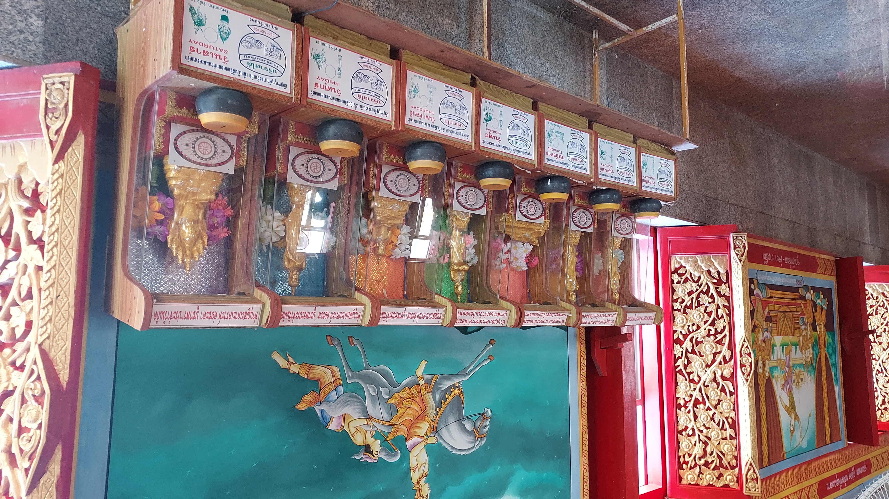
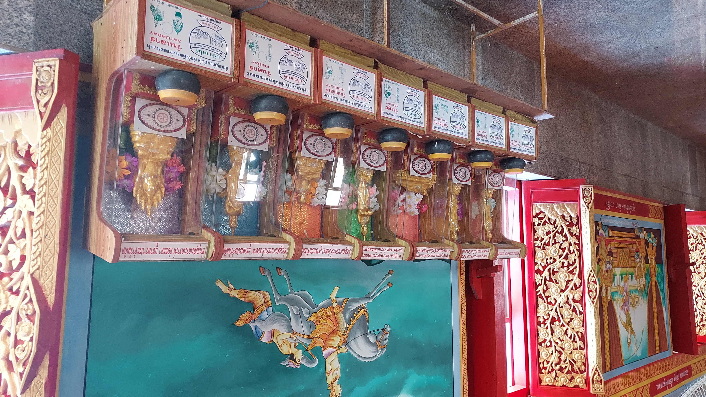

 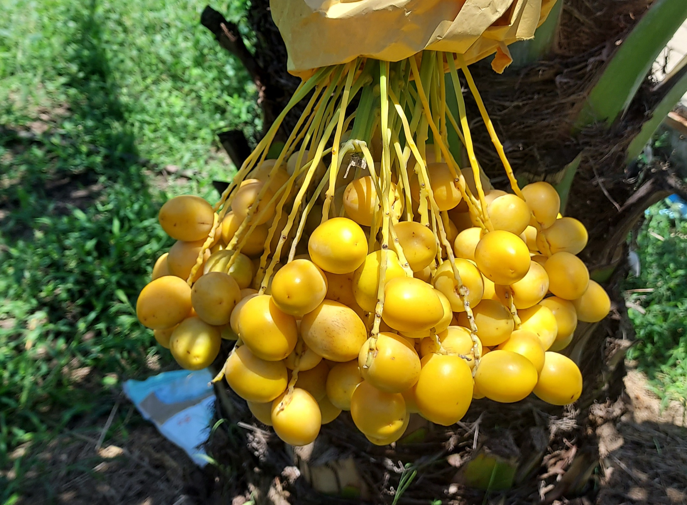
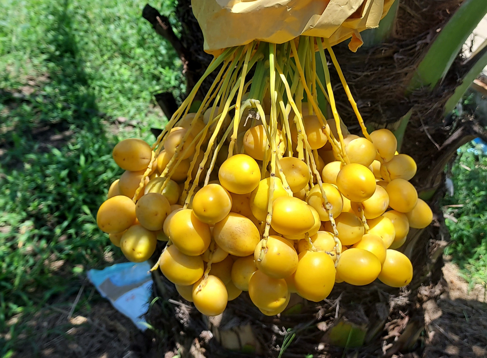
 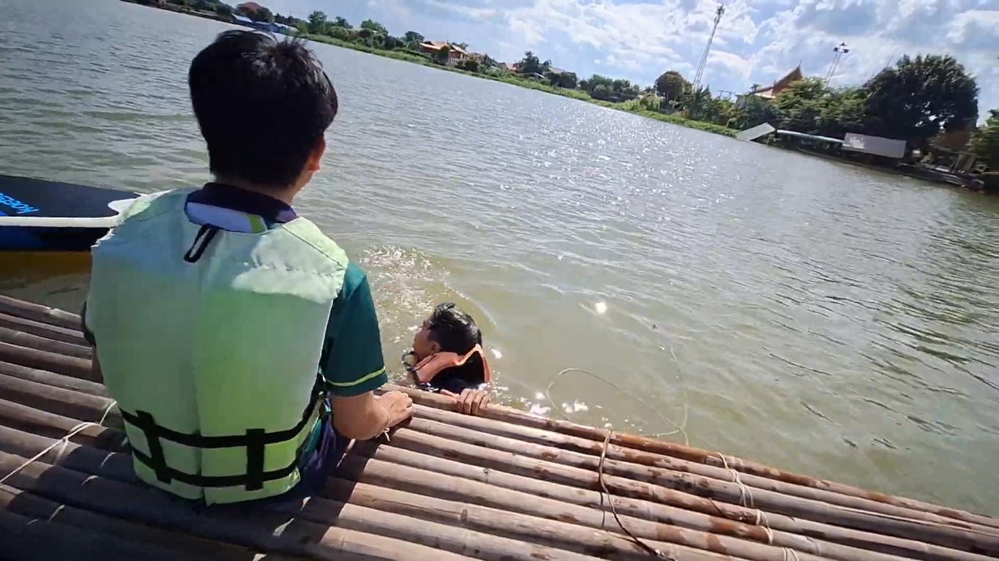
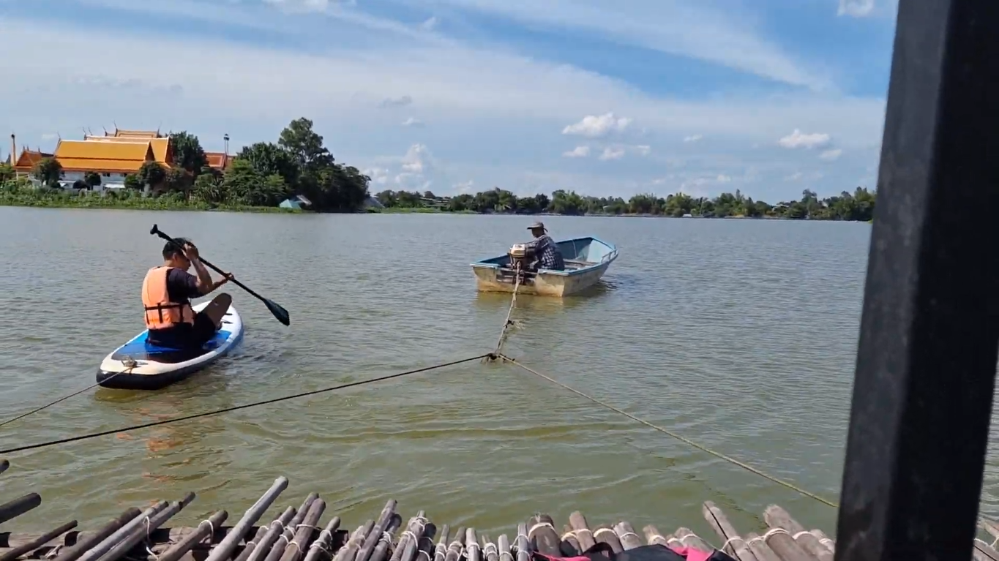
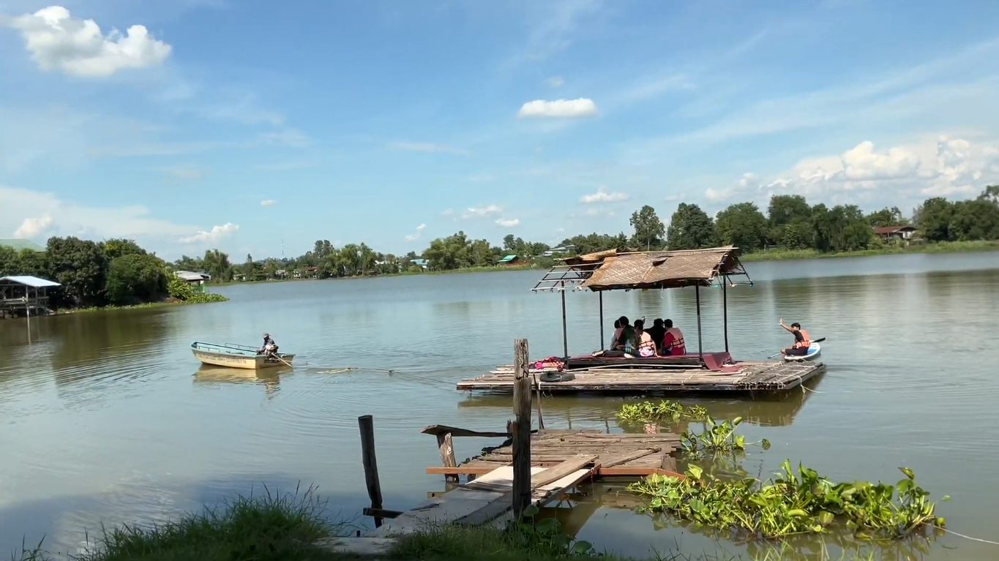
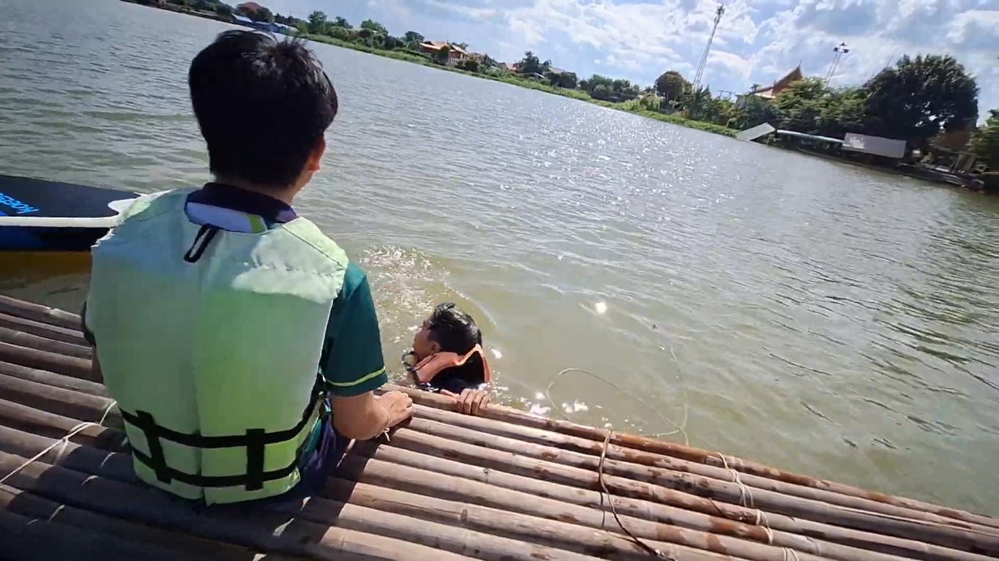
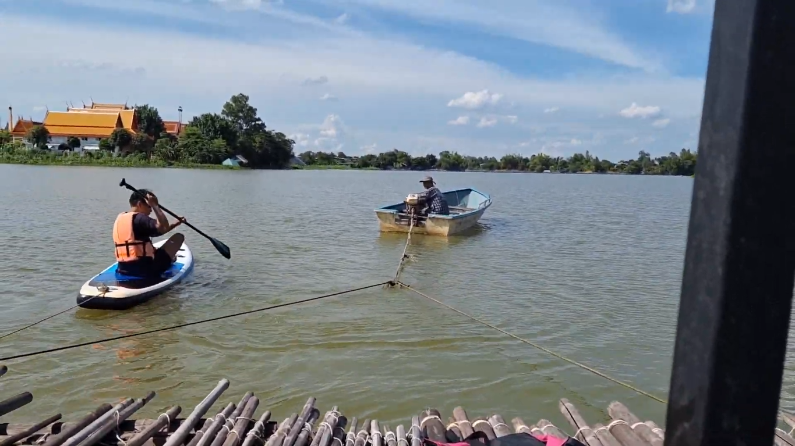
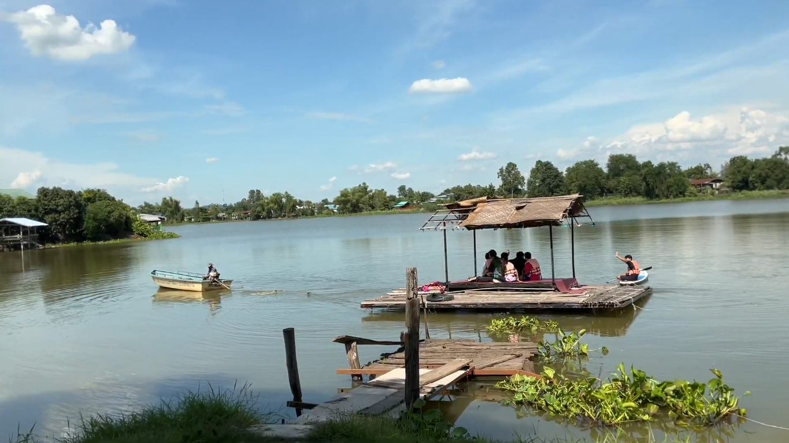

 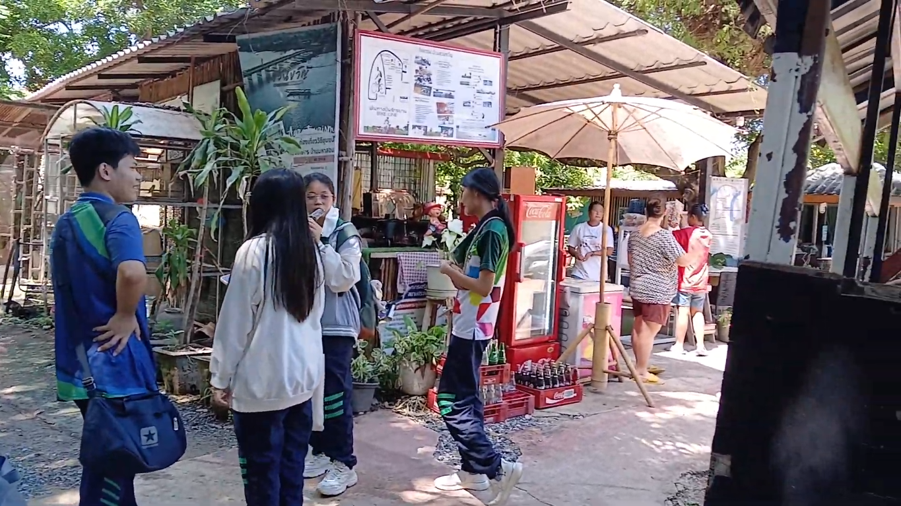
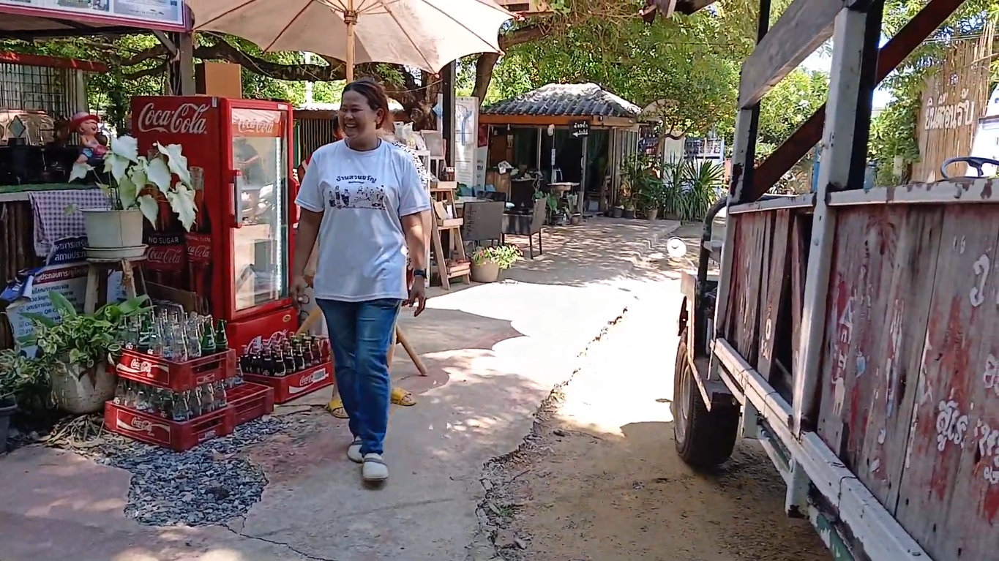
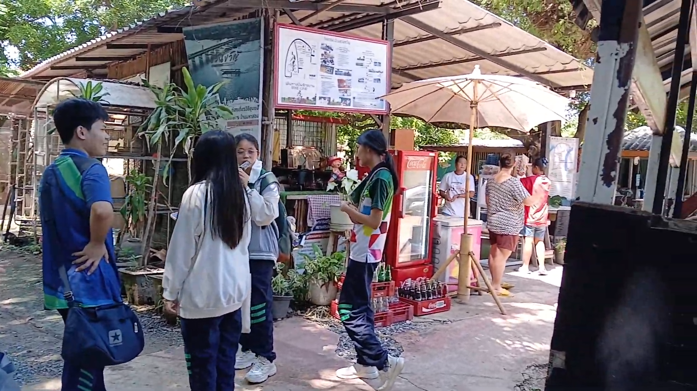
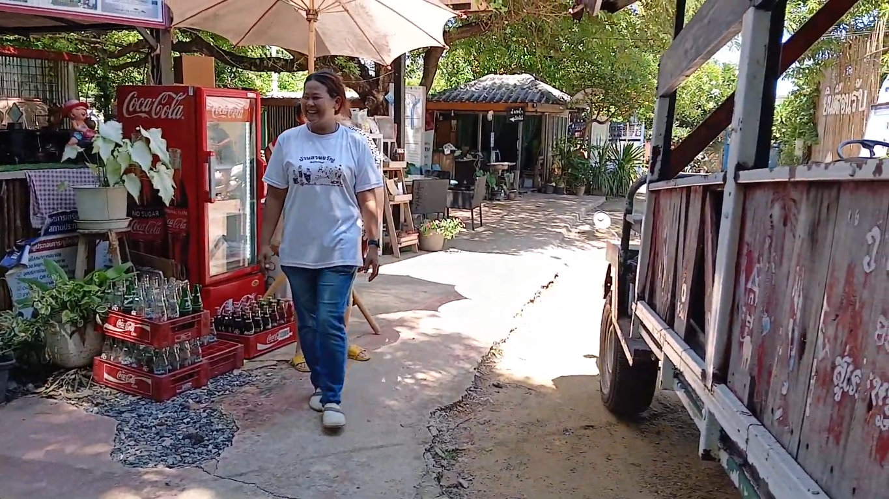